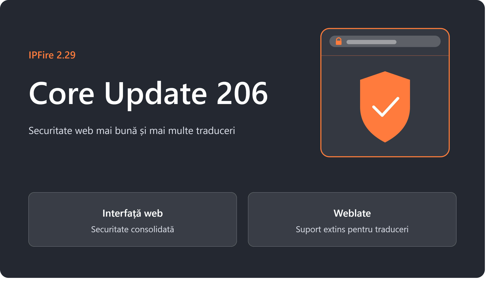

IPFire 2.29 Core Update 206 consolidează securitatea interfeței web și adaugă suport extins pentru traduceri prin Weblate

Distribuția firewall open-source IPFire a lansat 2.29 Core Update 206, o actualizare majoră de întreținere și securitate care întărește arhitectura interfeței de administrare web, remediază vulnerabilități de tip command injection și modernizează sistemul de localizare a platformei.
Securitate consolidată pentru interfața web și rețea
Principala noutate din punct de vedere al securității vizează eliminarea invocării directe a unui shell din operațiunile interne ale interfeței web. Prin această modificare structurală, interfața de administrare nu mai lansează procese shell pentru a rula comenzi, a citi fișiere sau a identifica procese active, eliminând astfel o întreagă clasă de posibile atacuri prin injecție de comenzi.
Pe lângă această măsură arhitecturală, Core Update 206 aduce și alte îmbunătățiri importante de securitate:
Remedierea extensiei WIO: Au fost corectate două vulnerabilități de tip command injection în add-on-ul WIO (Who Is Online), care ar fi putut permite unui atacator să execute comenzi shell cu privilegiile utilizatorului serverului web.
Curățarea certificatelor: Certificatele rădăcină cunoscute ca fiind compromise au fost eliminate din depozitul sistemului.
Restricționarea traficului DNS: Conexiunile de ieșire ale resolverului DNS sunt acum limitate strict la porturile dedicate DNS.
Optimizarea inspecției Suricata: Sistemul de prevenire a intruziunilor (IPS) Suricata nu mai încearcă să inspecteze traficul ESP criptat, evitând procesarea inutilă a pachetelor care nu pot fi analizate.
Sistem nou de traducere și program de instalare optimizat
IPFire a înlocuit vechiul sistem intern de localizare cu GNU gettext, rescriind șirurile de text sub formă de propoziții complete și coerente, administrate acum printr-o instanță Weblate dedicată.
De asemenea, programul de instalare a primit îmbunătățiri vizibile:
Include traduceri noi pentru română, maghiară și suedeză (iar portugheza europeană a fost înlocuită cu portugheza braziliană).
Consola folosește acum un font capabil să afișeze corect toate diacriticele din alfabetul limbii române.
Imaginea de instalare are o dimensiune mai redusă datorită compresiei Zstandard (zstd) și eliminării driverelor grafice neutilizate.
Suport pentru LoongArch și pachete actualizate
Actualizarea introduce suport oficial de compilare pentru arhitectura LoongArch (loongarch64), revine de la dracut-ng la dracut pentru generarea imaginilor initramfs și permite agentului Zabbix să colecteze metrici direct din Suricata.
Printre componentele de bază actualizate se numără:
Nucleul Linux: 6.18.64
Servicii și sistem:
systemd261.3,BIND9.20.29Securitate și VPN:
Suricata8.0.8,OpenSSL3.6.5,OpenSSH10.5p1,OpenVPN2.7.7,strongSwan6.1.0
Utilizatorii existenți pot instala Core Update 206 direct din interfața web de administrare sau prin intermediul managerului de pachete pakfire.